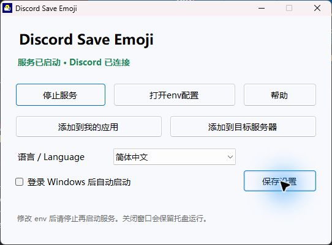
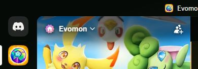

Windows 10/11 x64 · 无需安装 Node.js · 官方 Discord 个人应用

在 Developer Portal 新建应用。在 Installation 启用 User Install 和 Guild Install。User Install 选 applications.commands；Guild Install 选 bot + applications.commands，只授予 Create Expressions。不要启用特权 Intent，Requires OAuth2 Code Grant 关闭，Interactions Endpoint URL 留空。
在 Bot 页面取得 Bot Token（必要时自行 Reset Token）。点击主窗口“打开env配置”，把 Token 填在 DISCORD_TOKEN= 后并保存。不要加 Bot 前缀、不要分享 Token。OWNER_ID 和 TARGET_GUILD_ID 通常留空：自动识别应用所有者，稍后用 /setup 绑定服务器。点击“启动服务”，等待已连接。
DISCORD_TOKEN=YOUR_BOT_TOKEN_HERE TARGET_GUILD_ID= OWNER_ID=
连接后分别点击“添加到我的应用”和“添加到目标服务器”，完成 Discord 授权。目标推荐自己创建的私人服务器；机器人仅需加入这个目标。到目标服务器输入 /setup，收到已绑定提示即可。无需浏览器插件，也不用修改 Discord 客户端。
右键含自定义表情的消息 → Apps（应用）→ 保存表情 / Save Emoji。多个表情时勾选所需项，点击菜单外提交；一个表情直接保存。成功后在目标服务器的表情面板中使用。菜单最多 25 个，重复操作会再次占用槽位；贴纸、普通 Unicode 表情不支持。

保存不代替 Nitro。跨服务器发送仍需 Nitro / Nitro Basic 和外部表情权限。来源服务器无需安装机器人，但仍受 Discord 对个人应用的限制。看不到命令请确认两种安装都完成并刷新 Discord。失败请检查 Token、网络、权限和表情槽位；上传限流后稍后再试。窗口关闭后继续托盘运行；退出、关机或断网时不能保存。开机自启指登录 Windows 后启动，需勾选后保存。